This is a game of Diplomacy from the point of view of Austria. The first task is to match up the correspondances with the given years, using the requirement that no-one ever lies about capabilities. If a country says they will move from a specific province, they will always at least have the capability of doing that. If they say something happened in the past, it did. This is in-line with a standard game of Diplomacy where all the moves are visible to everyone after each turn. Whether they actually follow through on their promises is another question, and the point of the puzzle.
Using the maps it is possible to determine on each move whether the player writing the correspondence followed through or lied. In the case of possibile ambiguities, these are cleared up in future correspondences. There is always at least one blatant lie, or one obvious truth in each correspondence about a planned move. Furthermore there is never both an obvious truth and a blatant lie in the same correspondence. Using standard logic where 0 = False and 1 = True, a binary value can be assigned to each move, depending on which nations lied, and which nations told the truth. The ordering is that given in the correspondence, with Britain (leader begins with A) being the most significant bit and Germany (leader begins with F) being the least. Because only five bits are necessary to cover the English Alphabet, Britain always lies.
Taking these binary values and converting to alphanumerics spells out ARCHDUKE OTTO, a ruler of Austria around the era that the game of Diplomacy is set in.
Logic for the correspondences:
Correspondence 1: There is only one move where the black sea is empty, and both Russia and Turkey can enter it, Spr '01
Correspondence 2: Russia can capture an empty Ankara only in Fall '05 and Spr '06, only in Spr '06 is there a posibility of Turkey convoying on British ships: Spr '06
Correspondence 3: The Germans are in Belgium only in Spr '02
Correspondence 4: There is only one move where Austria tried to enter Tyrolia, this is the move after that, Fall '01
Correspondence 5: There is only one move where Britain is capable of convoying an army out of Germany, Fall '03
Correspondence 6: The British are in Galicia only in Spr '05
Correspondence 7: There is only one move where Turkey has troops in Galicia, and Russia has troops in Rumania, Spr '04
Correspondence 8: There is only one move where Turkey has troops in both Smyrna and Ukraine, Fall '05
Correspondence 9: There is only one move where Turkey has a fleet in the Ionian and Russia has an army adjacent to Vienna, Fall '04
Correspondence 10: Italy is in the Ionian in Fall '01 and Fall '02, but only one of them can a Turkish fleet move to Armenia, Fall '02
Correspondence 11: Russia in Galicia and France in Burgundy only occurs in Spring '03
Correspondence 12: Germans in Tyrolia and France in Picardy only occurs in Fall '06
Spring 01 | |
| 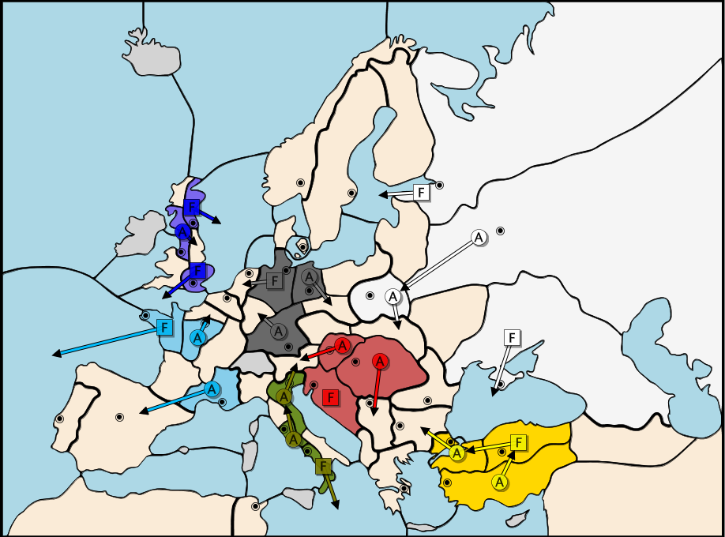 |
Correspondence Set: 1
Britain says its fleets will remain at home, they do not. FALSE France says its fleet will move into the channel, but moves into MAO instead. FALSE Italy says it will not move into Tyrolia, but does since the Austrian army is not there, and the German army in Munich moved elsewhere. FALSE Russia says it will not enter Galicia and does. FALSE Turkey says it will enter the Black Sea, but moves its fleet into CON instead. FALSE Germany says it will not move into Tyrolia, and its Munich army moves into Ruhr. TRUE Letter: A |
Fall 01 | |
| 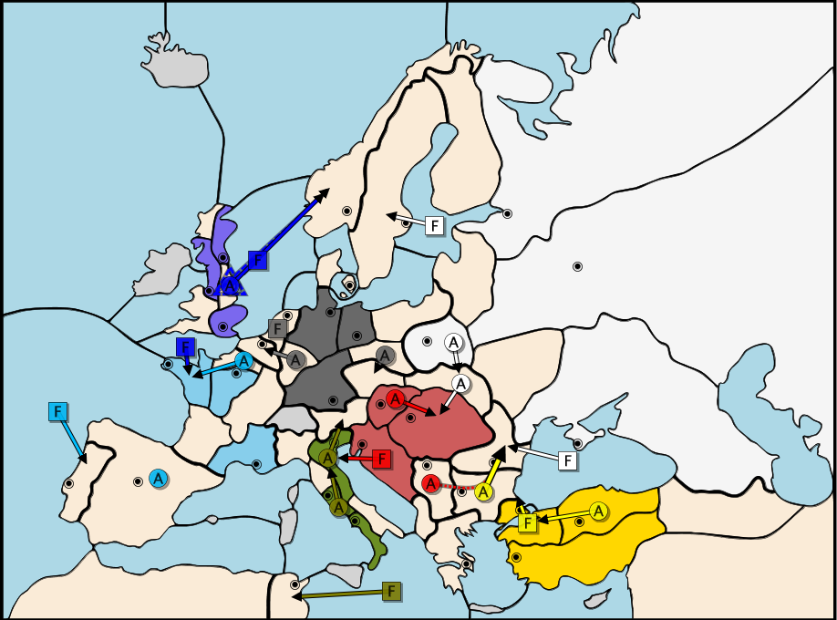 |
Correspondence Set: 4
Britain says its fleets will return home, they do not. FALSE France says it will move into Brest and does, but was bounced by Britain as seen in Spr '02 correspondence. TRUE Italy says it will not move into Tyrolia, but does.FALSE Russia says it will move into Prussia but does not. FALSE Turkey says it will attempt to take Rumania and does. TRUE Germany says it will hold in Silesia, but moves into Bohemia. FALSE Letter: R |
Spring 02 | |
| 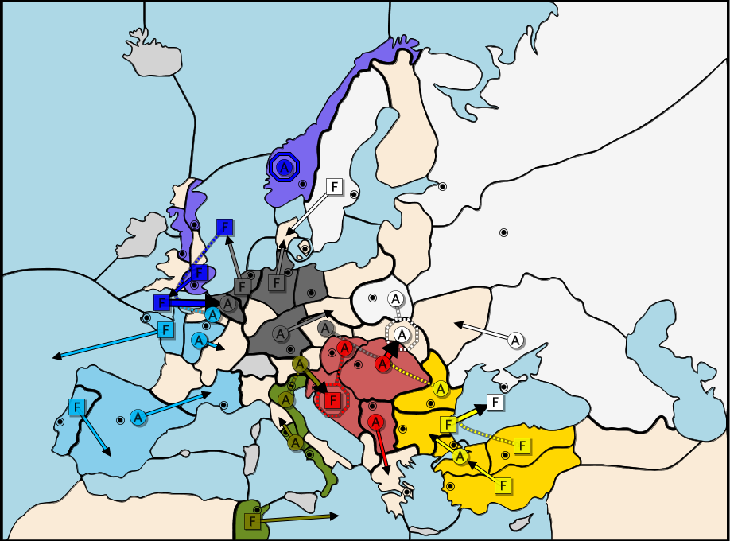 |
Correspondence Set: 3 Britain says its fleets will return home, they do not. FALSE France says it will will support Germany against a British attack, if it had, Britain could not have wound up in Belgium. FALSE Italy says it will not move Tyrolia-Piedmont, no foreign nation could prevent it from entering Piedmont.FALSE Russia says it will move Galicia-Ukraine. The Russian army is destroyed indicating that this did not happen. FALSE Turkey says it will support an attack on Galicia. Since Russia indicates in Fall '02 that it had supported Galicia from Warsaw, this must be true for the attack to be successful. TRUE Germany says it will support an attack on Galicia. Since Russia indicates in Fall '02 that it had supported Galicia from Warsaw, this must be true for the attack to be successful. TRUE Letter: C |
Fall 02 | |
| 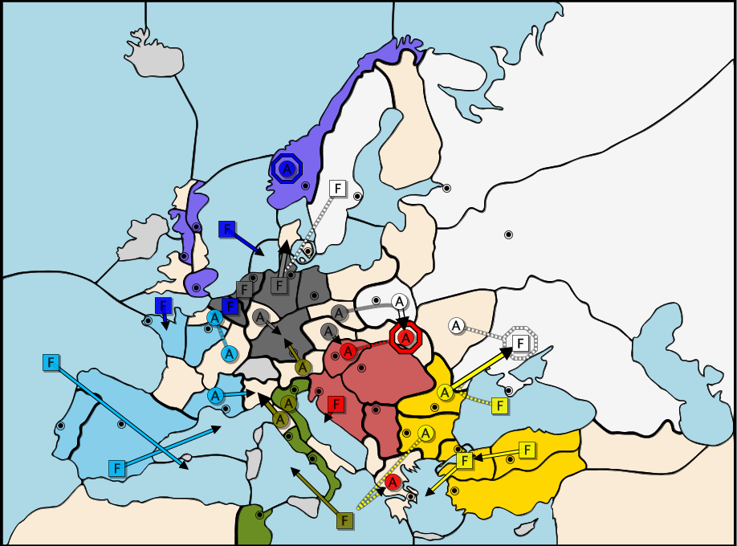 |
Correspondence Set: 10 Britain says it will retreat out of Scandinavia and mainland Europe but does not. FALSE France says it will support a German attack on Belgium. In Spr 03, Germany indicated that it did try to move into Belgium. Had France supported, this would have been succesful FALSE Italy says it will move its fleet into the Tys and does.TRUE Russia says it will hold in Warsaw, but instead takes Galicia. FALSE Turkey says it will move a fleet into Armenia but does not. FALSE Germany says it will neither support Russia nor cut support in Vienna, it must do at least one of these for the Russian attack to succeed. FALSE Letter: H |
Spring 03 | |
| 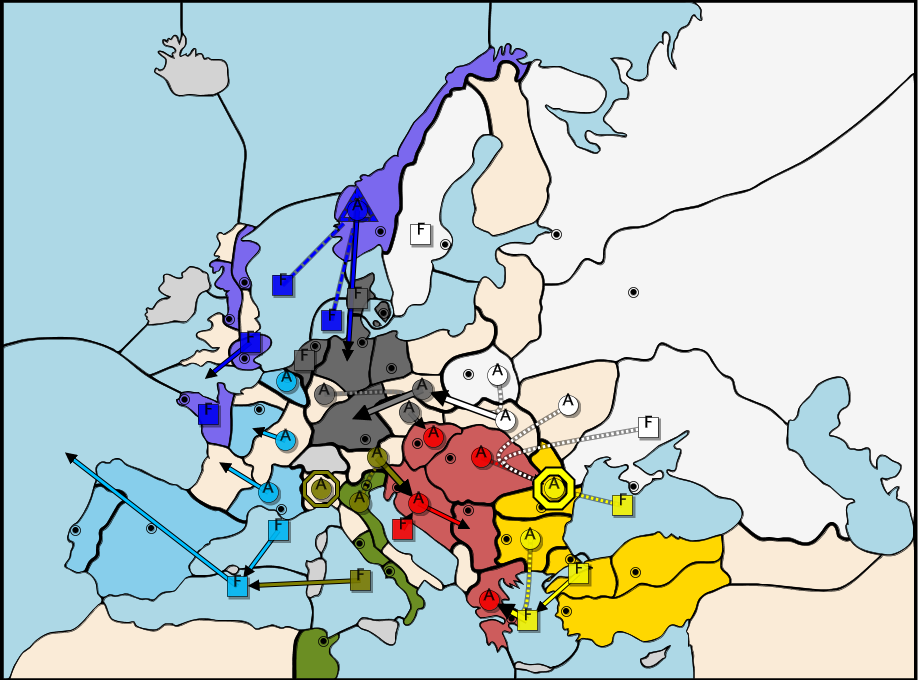 |
Correspondence Set: 11 Britain says it will retreat out of Scandinavia and mainland Europe but does not. FALSE France says it will move Bur-Mun, but the Bur army winds up in Paris FALSE Italy says it will attempt to capture Trieste, but both attempts and succeeds.FALSE Russia says it will move Gal-Sil and does. TRUE Turkey says it will move into the Ion and Aeg but instead moves into Greece. FALSE Germany says it will pull back to Ber and Mun, no foreign nation could stop either move. FALSE Letter: D |
Fall 03 | |
| 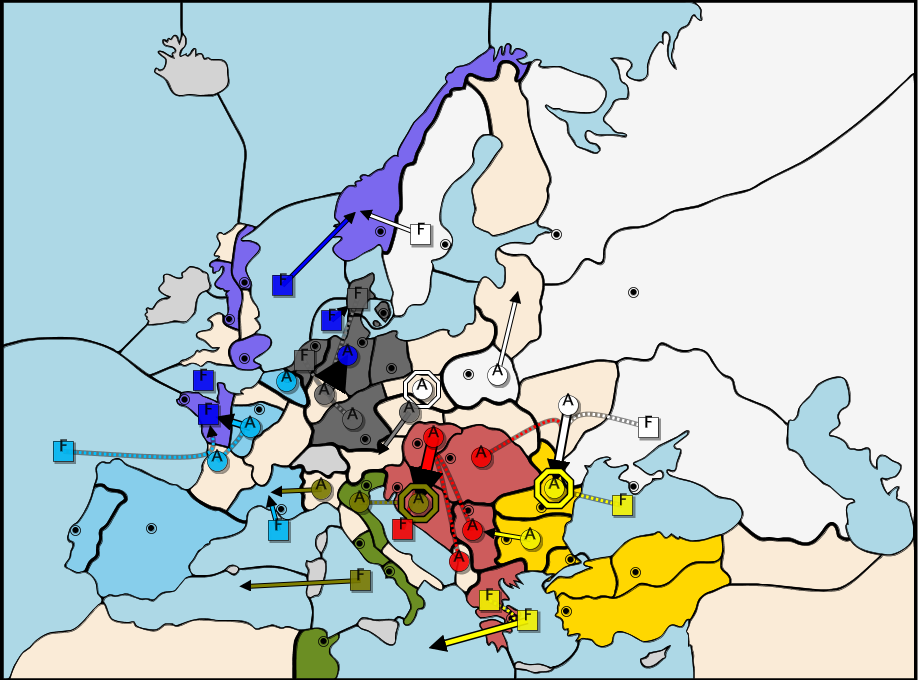 |
Correspondence Set: 5 Britain says it will convoy out of Germany but does not.FALSE France says it will attack Brest and does.TRUE Italy says it will retreat into Tyrolia with support. Had it done so it would have happened. The army is destroyed, indicating it did not do as promised.FALSE Russia says it will move War-Lvn in exchange for support into Rum, it does both. TRUE Turkey says it will not move further west, but moves into Ion. FALSE Germany says it will cut off Italian retreat by moving into Tyrolia and does. TRUE Letter: U |
Spring 04 | |
| 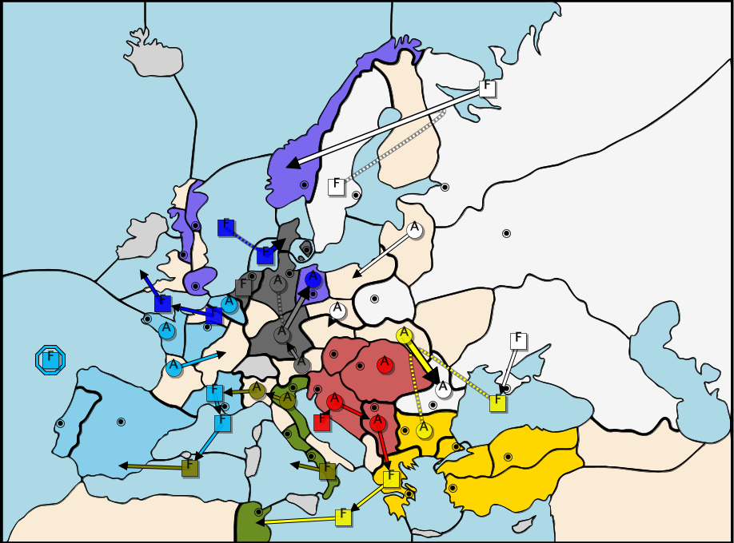 |
Correspondence Set: 7 Britain says it will return fleets in waters adjacent to Britain home but does not. FALSE France says it will move into NAO, nothing could prevent this move.FALSE Italy says it will not attempt to enter Tri, since Ven-Pie this is true. TRUE Russia says it will hold in Sil, but goes Sil-Boh FALSE Turkey says it will attack in Rumania, and abandon Greece and does. TRUE Germany says it will move Tyr-Mun and does. TRUE Letter: K |
Fall 04 | |
| 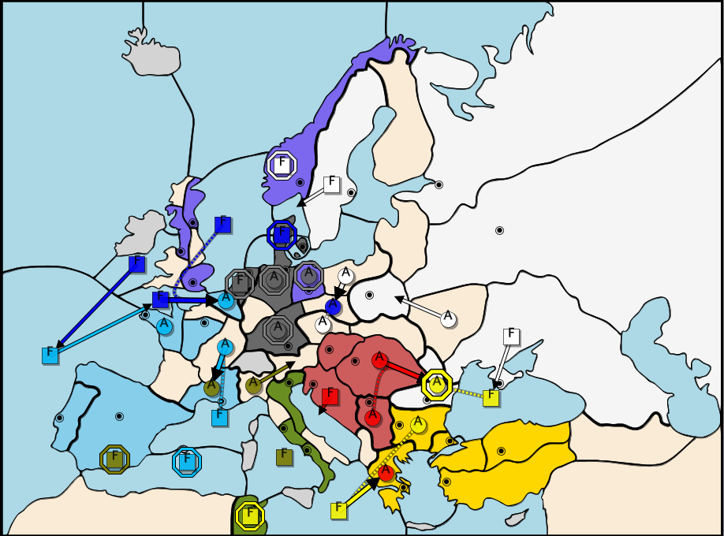 |
Correspondence Set: 9 Britain says it will return fleets in waters adjacent to Britain home but does not. FALSE France says it will support Belgium from Burgundy, but instead moves Bur-Mar.,FALSE Italy says it will remain in Pie, but moves to Tyr (again).FALSE Russia says it will not move into Vie, and since nothing could prevent it, it must have not tried. TRUE Turkey says it will not attempt to regain Greece but it does. FALSE Germany says it will not move into Tyr, since Italy winds up in Tyr, and it couldn't have supported itself, Germany must not have tried. TRUE Letter: E |
Spring 05 | |
| 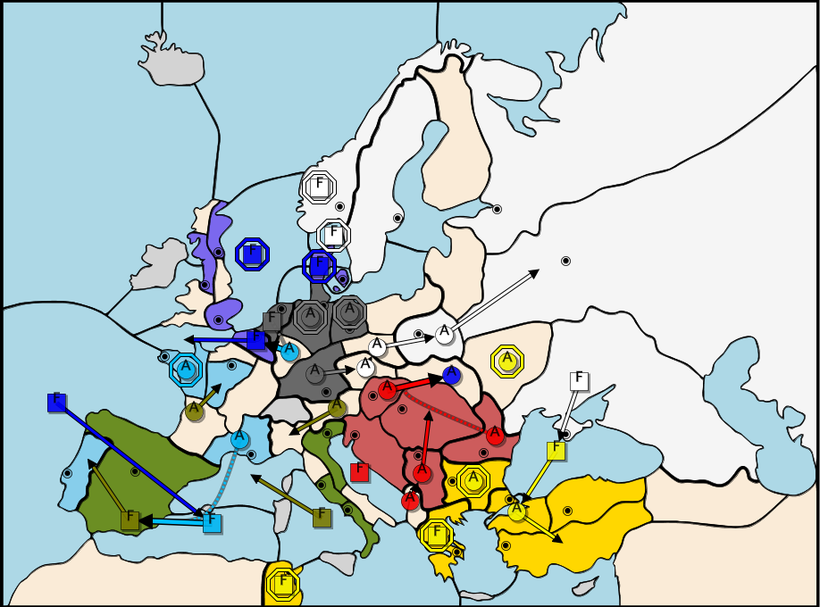 |
Correspondence Set: 6 Britain says it will leave Scandinavia but remains in Denmark. FALSE France says it will support an Italian recapture of Tunis, since the only fleet that could do that winds up in Spa, this is false. FALSE Italy says it will move Tyr-Pie and does. (yeah, Italy is schizo) TRUE Russia says it will retreat to Mos, and attempt to keep troops in War and Sil and does all of the above. TRUE Turkey says it will not attempt to move into Serbia, and since Austria doesn't bounce there, this is trueTRUE Germany says it will move into Boh and does. TRUE Letter: O |
Fall 05 | |
| 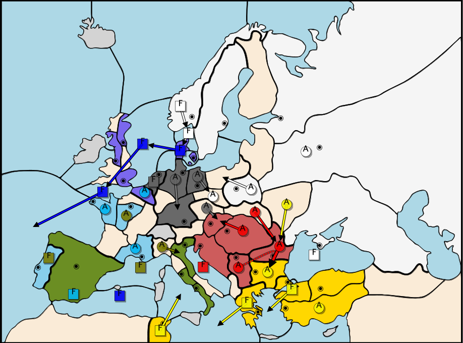 |
Correspondence Set: 8 Britain says it will return fleets in waters adjacent to Britain home but does not. FALSE France says it will not enter the Ruhr, since the only army that could stop it, went Kie-Mun, this is true. TRUE Italy says it will attack Mar from Pie, but moves Pie-Ven FALSE Russia says it will try to move into Denmark and does. TRUE Turkey says it will move Smy-Arm, and Ukr-Sev, since Russia's fleet in Bla can only have bounced one of the two, one must have succeeded, neither succeeded, so this is false. FALSE Germany says it will not move into Vie, since the Austrian move into Vie failed, they must have tried this. FALSE Letter: T |
Spring 06 | |
| 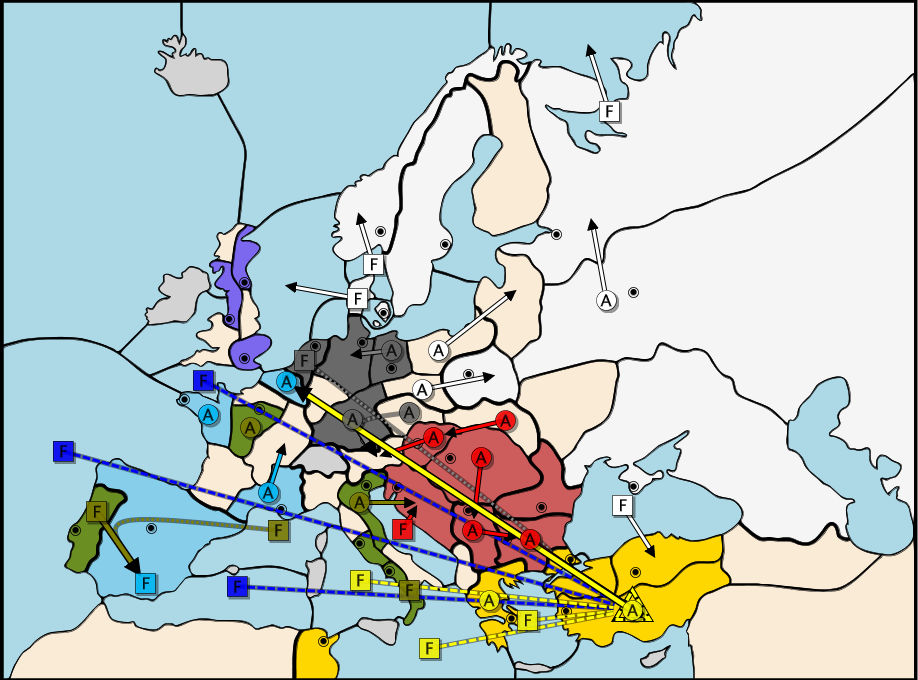 |
Correspondence Set: 2 Britain says it will not allow Turkish armies, but they must have to let the Turks into Bel. FALSE France says it will move Mar-Bur and does. TRUE Italy says it will not move Ven-Tri, but since Adr-Tri failed, it must have. FALSE Russia says it will capture Ank and does. TRUE Turkey says it is not collaborating with Britain, but it must have to get its army to Bel. FALSE Germany says it will not support a Turkish attack, but in the next move France informs it held in Bel, so German support from Hol is necessary to dislodge it. FALSE Letter: T |
Fall 06 | |
| 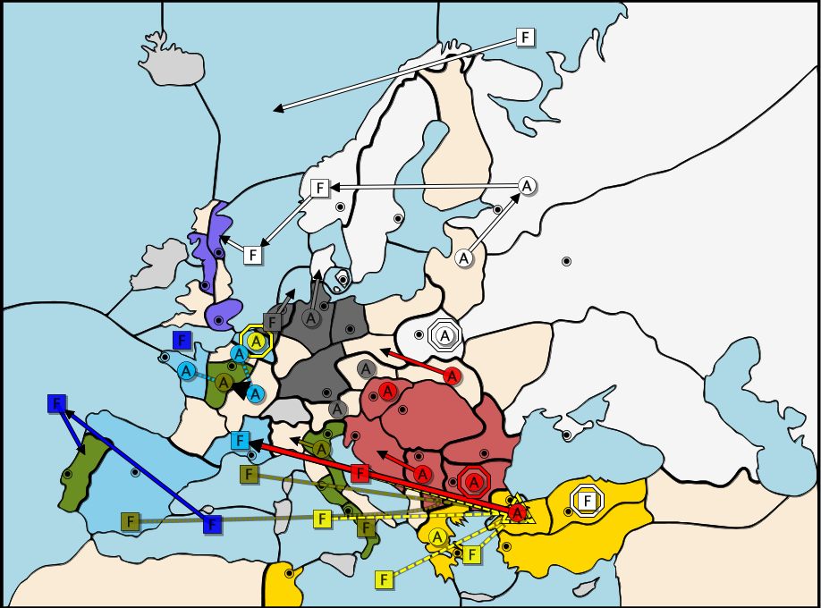 |
Correspondence Set: 12 Britain says it will retreat towards Britain, but moves into Por. FALSE France says it will support Belgium from Burgundy, but instead moves Bur-Mar.,FALSE Italy says it will convoy the Austrian army and does. TRUE Russia says it will invade Edinburgh and does. TRUE Turkey says it will convoy the army from Con to Mar and does. TRUE Germany says it will not move Tyr-Tri, since Ser-Tri succeeded and Austria, for some reason, didn't support the move, it must have done this. TRUE Letter: O |